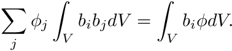
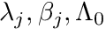
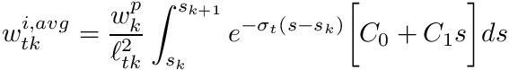

|
Chi-Tech
|
|
Chi-Tech
|
Monte Carlo based flux estimators traditionally use a number of tracks, traced within a volume, to estimate the scalar flux. For amount of tracks traced inside a volume, , originating from a sample of number of particles/rays, the scalar flux,  , can be estimated with
, can be estimated with
where  is the -th track length. This simply means that the scalar flux is the "average track length per unit volume".
is the -th track length. This simply means that the scalar flux is the "average track length per unit volume".
The individual tracks of these particles can be assigned a weight, , enabling a multitude of features.
For our purposes we are interested in three possible weightings, i) weighting by a spherical harmonic, which can be used to compute flux moments, ii) weighting by average FE shape function values, allowing the projection of flux onto a FE space, and finally iii) weighting with an exponential attenuation, allowing the computation of uncollided flux.
Applying a weight with a spherical harmonic is conceptually simple. For the -th track we simply set the weight to the spherical harmonic evaluated with the direction, , of the track,
![\[ \phi_{\ell m} \approx \frac{1}{N_p V} \sum_t^{N_t} \ell_t Y_{\ell m}( \boldsymbol{\Omega}_t), \]](../../form_376.png)
For a DFEM projection of the fluxes we require nodal values, on each cell, for a given flux quantity, . Therefore we seek such that
and since we need to solve the cell-by-cell system defined by

In this system the entries are simply the entries of the mass matrix, , and we still need to find the rhs-entries . This is where we will use the track length estimators by weighting with the shape functions b_i.
In this formulation we have
where
the average basis function value along the track. For ordinary Lagrange FE shape functions, which are not defined piecewise, the integral in the numerator can be obtained exactly using a numerical quadrature. For our applications, where we use the PWLD FE shape functions we need to split this integral per segment of the basic cell crossed.
For example, consider the polygon below, where a ray is traced from position to  .
.

The track traced across the cell needs to split into the segments defined by the sub-triangles of the polygon it crossed. Therefore the track needs to be split into tracks , and  as per the figure. Therefore the integral becomes
as per the figure. Therefore the integral becomes
![\[ \int_{s_a}^{s_b} b_i(s\mapsto \mathbf{x}) ds = \int_{s_0}^{s_1} b_i(s\mapsto \mathbf{x}) ds + \int_{s_1}^{s_2} b_i(s\mapsto \mathbf{x}) ds + \int_{s_2}^{s_3} b_i(s\mapsto \mathbf{x}) ds \]](../../form_413.png)
which we can evaluate analytically since it is linear on each segment.
Note:** The mapping of can be quite expensive so in this particular case it would be better to evaluate the shape function at the half-way point of each segment, after which the integral becomes
Weighting with an exponential attenuation adds the final piece of weighting necessary to efficiently compute the uncollided flux.
The exponential attenuation of the uncollided flux, , along the path of a ray with direction is expressed as
![\[ \frac{d\psi}{ds} = -\sigma_t(s) \psi(s) \]](../../form_367.png)
where is the distance traveled and is the total cross section. From this model we can compute the attenuation across a cell, with constant , as
where is the value of when it entered the cell.
To assimilate all of this into a raytracing algorithm we start a source particle with a weight, , which acts as the proxy for (i.e., ). From this we can determine the nodal uncollided flux,  , in a similar fashion as we would determine the regular flux, i.e.,
, in a similar fashion as we would determine the regular flux, i.e.,
however, now we need additional treatment for the integral containing , for which we have
where, this time,
Note here that is a function of position, specifically
and so is the basis function .
The form of this integral needs to split into segments in the same way we did in the previous subsection. Therefore, given K amount of segments, we now have
where is the track length of the -th segment and is the average weight of this segment. The weight is computed with
where  and are the beginning and ending positions of segment respectively.
and are the beginning and ending positions of segment respectively.
Note here that, since we have an expression for , we can compute at any point along track including at the start of any segment. Therefore we define which allows us to express as
Additionally we express the basis functions on a segment, since we know the shape function is linear on the segment, as
where and are the basis function values at the beginning and end of the segment, respectively. These two expressions allow us to evaluate the segment average weight as
and since we can simplify this expression as

where
![\[ C_0 = b_{i,k} s_{k+1} - b_{i,k+1} s_k \]](../../form_446.png)
![\[ C_1 = b_{i,k+1} - b_{i,k}. \]](../../form_448.png)
With these constants defined the expression can be evaluated analytically
![\[ w_{tk}^{i,avg} = \frac{w_k^p}{\ell_{tk}^2} \]](../../form_449.png)